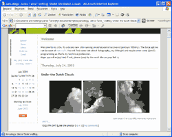
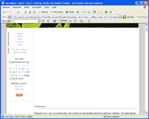
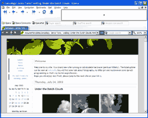
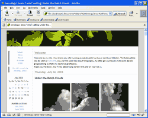

Ooh you dangerous !DOCTYPE
While starting to change my site form table based layout to css based layout I first got into problems with the DOCTYPE. IE6 doesn’t render it exactly as Mozilla 1.4 does. My sidebar used the complete width of the page and IE assumed to start the next div for my main content under my sidebar. Fudging a bit with the DOCTYPE kind of solved it.
As you see, I use the banner, sidebar, content, footer kind of layout like numerous sites. This is very easy using a table. Changing it using div for the page border, banner, sidebar content and footer kind of brought me into problems with IE6. Below are the problems I got

I had doctype defined as <!DOCTYPE html PUBLIC “-//W3C//DTD XHTML 1.1//EN” “http://www.w3.org/TR/xhtml11/DTD/xhtml11.dtd”> and going to <!DOCTYPE HTML PUBLIC “-//W3C//DTD HTML 4.0 Transitional//EN”> solved the problem for IE6 and Mozilla 1.4 and Opera waere still happy with it. Bu tthis still didn’t make me happy as it was weird that other sites seemed to get away with it. And today I found out that a simple <?xml version=”1.0” encoding=”UTF-8”?> makes IE6 happy!

As 80% of my users have ie (60% version 6, 7% version 5.5) that browser is my biggest worry. But as I’m also a happy user of Netscape for years I want to have things right with the latest Gecko also and downloaded Opera 7 to have a look with this browser. I do not have access to safari as this browser is also used a fair bit on my site; its around 7%! As safari is based on KDE I might have a look at Konqueror later as that is supplied with an easy installable Knoppix distribution (linux).
To make a long story short: “I do not know enough about doctypes, requirements for each type, browser differences, browser hacks etc…”
XHTML, CSS, RSS feeds. Powered by Movable Type. Hosted @Home with a domain by hostway.
Comments
Although Safari is based on KHTML it's not always the same. Safari is trying to immitate (or is comatible with) the behaviour of Mozilla. Which can be found in http://mozilla.org/docs/web-developer/quirks/doctypes.html or http://devedge.netscape.com/viewsource/2002/almost-standards/
I hope you will know more about doctypes. And ow, by the way: This information only costs a few eurocents or the use of Mozilla for your daily web and mail processing... :-p